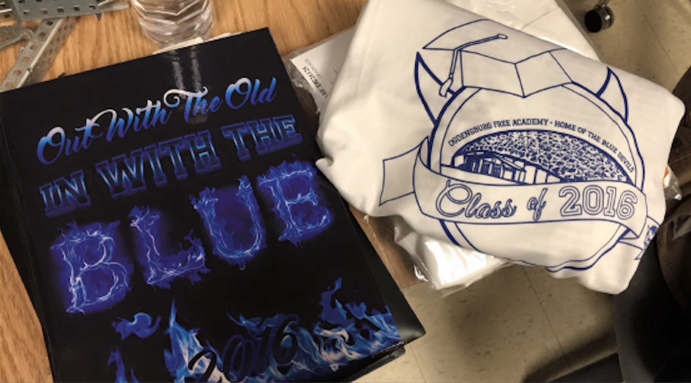
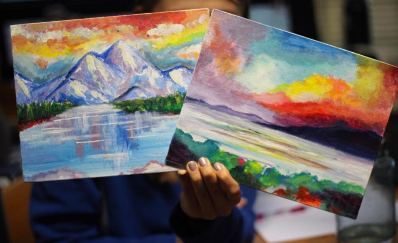

Hi, I'm Natalee Ryan!
Welcome to my web portfolio. A little about me: I am a current sophomore at Rensselaer Polytechnic Institute studying Computer Science. I grew up in Ogdensburg, a small town located in upstate New York. I enjoy art (traditional and digital), photography, playing guitar & harmonica, and adventuring. Currently, I am a member of the RPI Women's Club Soccer Team and Coding&&Community, a club focused on teaching code to youth in underrepresented groups in STEM.
Please feel free to
view my resume by clicking
here or if you would like to contact me directly, please head to my "Contact" section.
There are many other sections to my website, have a look around and thank you for your visit!

My Projects
Below are projects I have worked on ordered with the most recent first. Clicking each title will take you to the site they are hosted on. You can visit my
Github to view the repositories, collaborators, and code.
-
HampHack 2017 Winner for Category "Art for Change".
A satirical website aimed to raise awareness and advocacy towards environmental sustainability.
-
HackNY 2017 entry using Twilio API, a platform that allows software developeres to programatically make and receive phone calls and send and receive text messages.
My Art & Graphics
I am a freelance artist who enjoys traditional and digital art. I have designed graphics for shirts, posters, and stickers, along with original artwork for uses from display to tattoos. Feel free to
contact me about my art, I'd love to work with you!
More obscure art featured on my
Redbubble.
-
Troy Photocom
A logo created for Troy Photocom, an LLC founded by Garret Premo and I. Learn more about what we do at troy-photo.com.
-
Sandwich Warehouse Logo
A revamp to the logo, creating a higher quality design that better encapsulates the elements of the restaurant. View the revamped menu here.
-
YIKES Design
My first year of college brought upon many instances where the phrase "YIKES!" was more than applicable, thus this design. Buy a sticker here.
-
R.P.U. Design
As a student of Rensselaer Polytechnic Institute, I hear many variations of the acronym R.P.I.. One of my favorites is R.P.U. and I decided to create a design out of it. Buy a sticker here.
-
Custom Matching Tattoos - 2017
Tattoos designed to parallel each other, focused on the constellations Leo and Cancer. Contact me for tattoo designing.
-

Yin Yang Land & Sea
Land and Sea tattoo concept sketch for a friend.
-
Koala Holding Pineapple Tattoo
As the title says, a cute drawing for a friend symbolizing a quote and a life-changing trip to Australia, now on her arm.
-

Yearbook & Class Tees
Yearbook cover and class t-shirt graphics designed for Ogdensburg Free Academy 2015-2016 school year.
-

Landscape Paintings
Two landscape paintings in acrylic. View more art on my instagram.
My Photography
Capturing moments has always been a passion of mine. My style of photography is often described as colorful and natural. Everything you see has been taken with a Canon Rebel T3i. I will be expanding my website soon to include my cinematography. View more of my photos on my
instagram.
-
"The Bay"
A picture taken from atop the Golden Gate. 2017
-
"Under the Bridge"
A picture of the waters and path under the Golden Gate. 2017
-
Senior Portraits
A series of pictures taken for a friend to commemorate her final year of high school. 2016
-
Senior Headshot
Headshots to be used in the yearbook for the senior section. 2016
-
"Night Shoot"
Low-light urban photoshoot. 2017
-
"Camera Depth"
50mm lens, focus on camera. 2017

{kind=link}